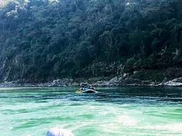
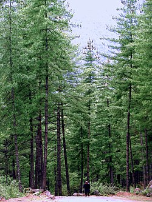
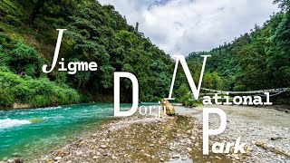
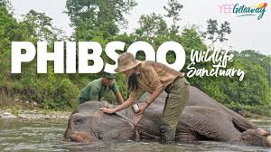
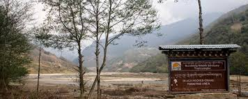
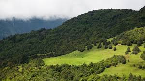
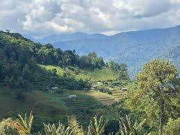
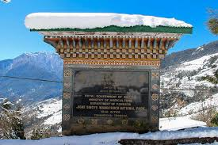

The Forests page was created to help visitors learn about Bhutan’s beautiful forests, national parks, and protected natural environments.
Bhutan is one of the most forest-covered countries in the world, with large areas protected through national parks and wildlife sanctuaries.
These forests are important for wildlife, clean air, rivers, and environmental balance across the country.
This page provides information about famous forests and parks such as Royal Manas National Park, Jigme Dorji National Park, Phrumsengla National Park, and Sakteng Wildlife Sanctuary.
Visitors can explore different forest types including pine forests, tropical forests, bamboo forests, and alpine mountain forests found across Bhutan.
Bhutan’s forests are home to rare animals such as snow leopards, red pandas, golden langurs, tigers, and black-necked cranes.
This page was created to encourage environmental conservation and help people appreciate Bhutan’s rich biodiversity and natural beauty.

Tropical forest rich with wildlife and biodiversity.
Royal Manas National Park is one of Bhutan’s oldest and most important protected forests. It is famous for its tropical forests and wildlife.
The forest is home to tigers, elephants, golden langurs, and many bird species.
Royal Manas is connected to India’s Manas National Park, allowing animals to move freely between forests.
Bhutan protects this forest through strict environmental conservation programs.

Beautiful forests covering Bhutan’s valleys and mountains.
Pine forests are commonly found across Bhutan’s mountain regions and create peaceful natural scenery.
These forests are home to birds, deer, monkeys, and other wildlife species.
Pine forests also protect rivers, reduce soil erosion, and improve air quality.
Many hiking trails pass through Bhutan’s pine forests, attracting tourists and nature lovers.

One of Bhutan’s most famous protected national parks.
The park contains glaciers, snowy mountains, forests, and beautiful rivers.
Rare animals such as snow leopards, takins, blue sheep, and Himalayan black bears live there.
Many remote villages are located inside the park, preserving traditional Bhutanese lifestyles.
Tourists visit the park for trekking, camping, photography, and nature exploration.

Subtropical forest sanctuary rich in biodiversity.
Phibsoo Wildlife Sanctuary is known for its subtropical forests and natural grasslands in southern Bhutan.
It is one of the few places in Bhutan where spotted deer and sal trees can be found naturally.
The sanctuary also protects elephants, leopards, and many bird species.
Its forests are important for maintaining ecological balance and wildlife conservation.

Beautiful sanctuary with forests, rivers, and alpine meadows.
Bumdeling Wildlife Sanctuary is located in northeastern Bhutan and contains forests, mountains, and river valleys.
The sanctuary is important for black-necked cranes that migrate there during winter.
Its forests support red pandas, Himalayan black bears, and many rare birds.
The area is also rich in medicinal plants and Bhutanese culture.

Untouched mountain forest sanctuary in eastern Bhutan.
Sakteng Wildlife Sanctuary is famous for its dense forests, alpine meadows, and bamboo forests.
The sanctuary was created to protect the legendary Migoi, also known as the Bhutanese Yeti.
Red pandas, Himalayan black bears, and rare birds live in the sanctuary.
The area remains one of Bhutan’s most untouched natural regions.

Mountain forest park with scenic landscapes and rich wildlife.
Phrumsengla National Park contains pine forests, fir forests, and broadleaf forests across different elevations.
Animals such as tigers, red pandas, leopards, and deer species live in the park.
The park is also famous for colorful rhododendron flowers that bloom during spring.
Many scenic roads and viewpoints pass through the park area.

Large protected forest area in central Bhutan.
The park contains forests, rivers, mountains, and diverse wildlife habitats.
Golden langurs, clouded leopards, tigers, and elephants live in the park.
It is one of Bhutan’s most important conservation areas for protecting biodiversity.
The park also supports eco-tourism and environmental education.